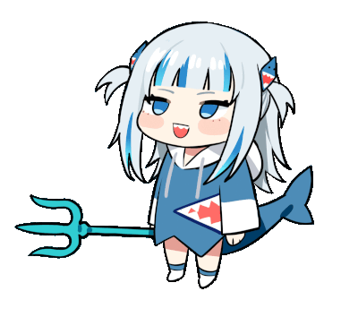

Get to know the vTubers from the largest vTuber company in Japan!
Hololive Productions, more commonly known as Hololive,
a virtual idol company run by
Cover Corp featuring idols each embodying a persona, such as a shrine maiden or a cheerleader.
They livestream on primarily YouTube but occasionally on other platforms such as Nico Nico or Bilibili.
Hololive's main headquarters is located in Japan. However, they have branches in Indonesia and China (Now dissolved). The first idol featured from Hololive is Tokino Sora, who debuted in September 7 2017. The company since late 2019 has seen some major growth in numbers and popularity. They have gained so much popularity that their most popular idol, Gawr Gura, has over 2 million subscribers on Youtube and 700 thousand followers on Twitter.
There are over 50 idols in Hololive, each with their own character design, voice, pesonality, outfits and even custom emotes (on YouTube). There are 5 sub-groups: Hololive (Main Group), Hololive English, Hololive Indonesia, Hololive China (Dissolved) and Holostars. They also have a music label called INoNaKa Music.
Let the man behind Hololive explain of what Hololive is about!
These are examples of the amazing songs that the idols have put out
Shorts skits made weekly of the members of hololive
「AZKi」
「Tokino Sora」
「Roboco」
「Sakura Miko」
「Hoshimachi Suisei」
「Yozora Mel」
「Shirakami Fubuki」
「Natsuiro Matsuri」
「Aki Rosenthal」
「Akai Haato」
「Hitomi Chris」
「Minato Aqua」
「Murasaki Shion」
「Nakiri Ayame」
「Yuzuki Choco」
「Oozora Subaru」
「Usada Pekora」
「Uruha Rushia」
「Houshou Marine」
「Shiranui Flare」
「Shirogane Noel」
「Amane Kanata」
「Kiryu Coco」
「Tsunomaki Watame」
「Tokoyami Towa」
「Himemori Luna」
「Yukihana Lamy」
「Momosuzu Nene」
「Shishiro Botan」
「Omaru Polka」
「Mano Aloe」
「Shirakami Fubuki」
「Ookami Mio」
「Nekomata Okayu」
「Inugami Korone」
「Hanasaki Miyabi」
「Kanade Izuru」
「Arurandeisu」
「Rikka」
「Yakushiji Suzaku」
「Kagami Kira」
「Astel Leda」
「Kishido Temma」
「Yukoku Roberu」
「Kageyama Shien」
「Aragami Oga」
「Tsukishita Kaoru」
「Ayunda Risu」
「Moona Hoshinova」
「Airani Iofifteen」
「Kureiji Ollie」
「Anya Melfissa」
「Pavolia Reine」
(All Retired)
「Civia」
「Spade Echo」
「Yogiri」
「Artia」
「Doris」
「Rosalyn」
「Takanashi Kiara」
「Mori Calliope」
「Ninomae Ina'nis」
「Gawr Gura」
「Watson Amelia」

「Roboco」
"Ponkotsu Robot"
ü§ñ
"Harobo!", Roboco's signature greeting. A cheerful robot from a random wasteland with a beastly setup, one of the specially inducted, known as the 0th generation. She is very dedicated to her work, even running to a convenience store to get a gift card mid-stream as her credit card reached its limit.

「Sora-chan」"The True Idol"
üêª
The first idol in the Hololive Franchise and part of the special Generation 0. A bubbly, derpy and lovable girl. A girl who fits the term idol to the tee and whose dream is to one day perform a live concert at the "Yokohama Arena" Everyone in hololive knows not to mess with her. When she's around, every member acts like the prim and proper idol they ought to be and would behave around her. Fun fact, she is also known for not showing any emotion in horror games and she has moments where her head gets dislocated from technical issues.

「Miko-chi」"Elite Miko"
üå∏
"Nyahallo!" Sakura Miko, one of the special Generation 0, and yet always finds herself in bad but hilarious predicaments. She once was texted by her mother mid-stream, saying she was watching, burnt her house down in minecraft by accident and accidentally launching an "eroge" or R18+ visual novel by accident on stream. She strives to do her best but keeps failing in the most epic way. Which, funnily enough, is one of her charms.

「Matsuri-chan」"God"
üèÆ
"Konbanwasshoi!" Matsuri a first year high school cheerleader who has a very cheerful and energetic personality. Her personality makes her popular among her co-workers and is also a respectable senior towards her juniors often engaging with the newer members who have just joined hololive, helping them get the ropes. She is known to be very unfiltered to the point that sometimes can be borderline inappropriate but we all love her for it. She has also expressed openly about being into erotic genres, particularly lolis. She sometimes also has special appearances of family members in her streams like her little brother "Ototo-kun" and mother "Mamatsuri" and sometimes will do audio only streams on Twitcasting where she talks more about life and her inner thoughts rather than trying to entertain. She is also into an FPS shooter called Apex Legends and another vTuber from a different company by the name of Hoshikawa Sara.

「Aki Rose」"MukiRose"
üçé
"Aloona!" An alien elf from another universe. This member of the first generation of hololive is curious about the culture of our world and tries her best to understand us. She is one of the people more fluent in english and tries to use western slang in her livestreams. She is profecient in belly-dancing most prominently shown in her original music video "Shallys" where she sang in a fictional elven language and belly-danced, the nickname of MukiRose came from a game called Ark Survival Evolved where the character she plays is a super buffed man leading to Muki(Muscly) Rose(Rosenthal). Aki has an afinity for alcohol and have on occassion passed out on drinking streams before, where she has made cute noises while asleep leading to her chat exploding.

「Chris」
üå∞
Not much is known about Hitomi Chris. Her time in Hololive was shortlived as she was involved in a controversy that led to her retirement just after her debut. She was the cause of discussions about appropriation of idol culture in Japan, a topic still discussed today.